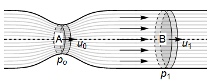
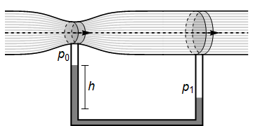
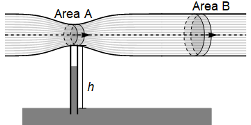
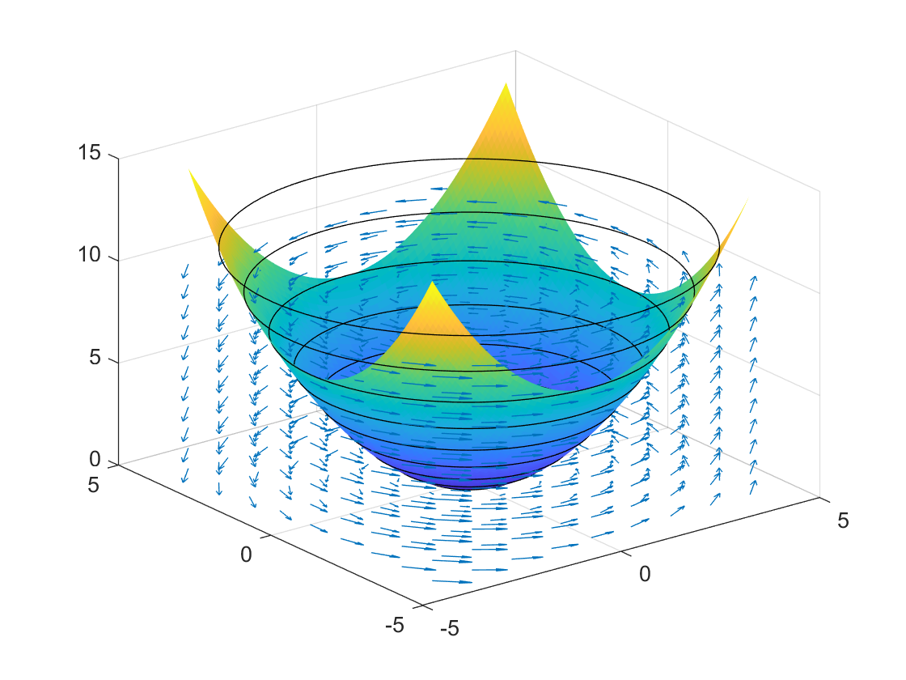

Bernoulli’s equation¶
In this section:
Under what conditions does Bernoulli’s theorem hold?
If you partially cover the hole of an escaping water jet with your finger, what happens to the pressure?
Statement¶
If we assume no viscosity, steady flow, constant density, then the following result applies on a streamline:
In the special case where the body force is gravity, we have \(\phi=gz\)
Warning
The equation only applies on a streamline, except in the case of irrotational flow \(\underline{\omega}=\underline{0}\), where the constant is the same on all streamlines.
Since the relationship holds only for steady flows, the streamlines are identical to the particle paths.
Note: There is also a version of Bernoulli’s equation that applies to unsteady potential flows, but we do not consider it here
Derivation¶
We start with the inviscid form of the momentum equation
Recall that if the body force \(\underline{F}\) is conservative (does no work), then it can be expressed as the gradient of a scalar potential. By convention, we usually introduce a negative sign, so that that work done against \(\underline{F}\) increases the potential, while work done by \(\underline{F}\) decreases the potential:
Now, let us further assume that the fluid is uniform density, \(\rho\) is constant, so that we may write:
Using the vector identity \(\underline{u}.\nabla\underline{u}=(\nabla\times\underline{u})\times\underline{u}+\nabla\left(\frac{1}{2}\underline{u}.\underline{u}\right)=(\underline{\omega}\times\underline{u})+\nabla\left(\frac{1}{2}v^2\right)\) then gives
where \(H\) is known as the “head”.
Try to prove the strange-looking vector identity for \(\underline{u}.\nabla\underline{u}\), by writing out each expression in component form.
We may yet further simplify if we assume that the flow is steady, so \(\displaystyle \frac{\partial \underline{u}}{\partial t}=0\), and by taking the scalar product with vector \(\underline{u}\) to eliminate the vorticity term:
Since \(\underline{a}.(\underline{b}\times\underline{a})=0\) for any vectors \(\underline{a},\underline{b}\) this can be simplified to \(\underline{u}.\nabla H=0\). The result says that the head remains constant on a streamline, since the directional derivative along \(\underline{u}\) is zero.
Applications¶
Venturi effect¶
The Venturi effect is the name given to the observed phenomenon that through a constricted section of pipe there is an increase in velocity and hence a decrease in pressure. In the illustration below and in the accompanying analysis, the flow has been idealised such that it is assumed to be steady and laminar (smooth). For a more realistic depiction, see for example this paper - especially figure 9, which gives a treatment in two dimensions using finite difference numeric methods.
On the diagram, \(A,B\) denote the cross-sectional areas at the narrowest and widest points of the tube. The pressure and flow speed on a streamline through the centre of the pipe are denoted \(p_0,u_0\) at the narrowest point and by \(p_1,u_1\) at the widest point. The density \(\rho\) is assumed to be constant.

{kind=link}
By conservation of mass, we may write down the following result for the volumetric flow rate:
By Bernoulli’s theorem for the central streamline we may also say that
Rearranging the two results together gives (for example)
We can see that through the choke point there will be an increase in velocity and a decrease in pressure compared to the inlet/outlet.
In general, when we observe bunching of streamlines the constrainment in volume implies a velocity increase due to mass conservation, since to maintain the same flux through a surface the velocity must increase. As a result, if the assumptions of Bernoulli are met, we see a pressure decrease. This result is sometimes used to explain the lift over an airfoil or the magnus effect on a rotating cylinder.
However, we must be careful as Bernoulli’s theorem assumes inviscid fluid, and it turns out the viscosity is very important when fluid moves past a boundary.
Attaching a manometer¶
We now attach a second tube as shown in the diagram below, and allow the fluid in the second tube to come to rest as shown.

{kind=link}
According to Bernoulli’s theorem \(p_1-p_0=\rho g h\), so using the result for the pressure difference that we obtained previously gives:
If we know the ratio of the two cross-sectional areas, then by measuring height \(h\) in the fluid column we may determine the flow speed through the narrow part of the pipe.
Water flows along a horizontal pipe, through a contraction and out into the atmosphere, as shown. Given that the volumetric flow rate is \(Q\), estimate the maximum height \(h\) for which water can be drawn into the main flow from a lower reservoir that is open to the atmosphere.

{kind=link}
A rotating bucket¶
Consider an ideal fluid of zero viscosity, rotating under gravity \(g\) about the \(z\) axis with constant angular velocity \(\Omega=\dot{\theta}\). The particle paths for this motion satisfy
where \(\dot{r}=0\) and \(\dot{\theta}=\Omega\). From these results we may obtain the velocity field relative to Cartesian axes:
This is an example of vortex flow. You are encouraged to verify that the vorticity for this fluid is \(\omega\) and that the flow is divergence-free. Verify also that \(\dot{\underline{u}}=\underline{0}\) and so the streamlines are the same as the particle paths.
Bernoulli’s equation () applies on a streamline, but the constant of integration varies from streamline to streamline since the flow is not irrotational. Therefore solving the equation for \(h\) in terms of \(x,y\) and \(p_0\) will not give us the shape of the fluid surface. If you try this, it would suggest that the shape of the fluid surface is an upturned parabola, which is exactly the opposite of what we observe when we spin a bucket!
To find the fluid surface, we can go back to Euler’s formula, which applies throughout the fluid, not only on a streamline:
Substitute in the velocity field \(\underline{u}=\Omega(-y,x,0)\) and solve for each component to deduce the result
From this relationship, we can see that the constant pressure surfaces are parabolic, and we can also calculate the height of streamlines on a given pressure surface. The plot below shows the pressure surface and streamlines for \(p=p_0\). The velocity field is also shown on the plot.

{kind=link}
Produce a figure similar to the one above, by plotting the vector field, streamlines and isosurface in Python. You can take arbitrary values for \(p_0,\Omega,\rho,g\), since they do not affect the shape.